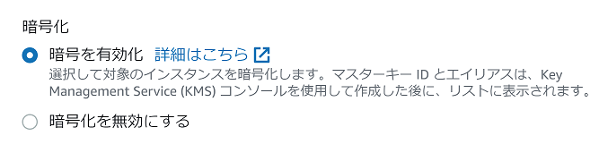

暗号化するには、DB作成時に暗号化を有効にする
mysqlコマンドでは--ssl-caパラメータに公開鍵を指定する
MySQL 5.7以降
mysql -h myinstance.c9akciq32.rds-us-east-1.amazonaws.com --ssl-ca=[full path]rds-combined-ca-bundle.pem --ssl-mode=VERIFY_IDENTITY
MySQL 5.6以前
mysql -h myinstance.c9akciq32.rds-us-east-1.amazonaws.com --ssl-ca=[full path]rds-combined-ca-bundle.pem --ssl-verify-server-cert
MySQLの機能を使用して、特定のユーザーについてSSL接続を必須とすることができる
MySQL 5.7以降
ALTER USER 'encrypted_user'@'%' REQUIRE SSL;
encrypted_userがユーザー名
MySQL 5.6以前
GRANT USAGE ON *.* TO 'encrypted_user'@'%' REQUIRE SSL;
MySQLサーバー側でSSL接続を必須にするには設定ファイルにrequire_secure_transportを指定するか、サーバー実行中に以下のコマンドを実行する
MySQL 5.7
[mysqld]
require_secure_transport=ON
SET PERSIST require_secure_transport=ON;
require_secure_transportは5.7.8で追加されたようである。5.6にはない